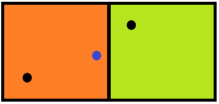

How to get a time zone from a location using latitude and longitude coordinates?
Given the latitude and longitude of a location, how does one know what time zone is in effect in that location?
In most cases, we are looking for an IANA/Olson time zone id, although some services may return just a UTC offset, or some other time zone identifier. Please read the timezone tag info for details.
Answer
Time Zone Location Web Services
- Google Maps Time Zone API
- Bing Maps Time Zone API
- Azure Maps Time Zone API
- GeoNames Time Zone API
- TimeZoneDB API
- AskGeo - commercial (but arguably more accurate than GeoNames)
- GeoGarage Time Zone API - commercial, focusing on Nautical time zones.
Raw Time Zone Boundary Data
- Timezone Boundary Builder - builds time zone shapefiles from OpenStreetMaps map data. Includes territorial waters near coastlines.
The following projects have previously been sources of time zone boundary data, but are no longer actively maintained.
- tz_world - the original shapefile data from Eric Muller
- whereonearth-timezone - GeoJSON version with WOEDB data merged in
Time Zone Geolocation Offline Implementations
Implementations that use the Timezone Boundary Builder data
- node-geo-tz - JavaScript library (Node.js only)
- timespace - JavaScript library
- tz-lookup-oss - JavaScript library
- GeoTimeZone - .NET library
- Geo-Timezone - PHP library
- timezonefinder - Python library
- ZoneDetect - C library
- Timeshape - Java library
- TimeZoneMap - Java and Android library
- lutz - R library
- go-tz - Go library
- Timezone lookup - Go library
- docker-timezone-lookup - docker container wrapping node-geo-tz
- tzf - Go library
- tzfpy - Python port of
tzflibrary - tzf-rs - Rust port of
tzflibrary
Implementations that use the older tz_world data
- latlong - Go library (Read this post also.)
- TimeZoneMapper - Java library
- tzwhere - JavaScript/Node library
- pytzwhere - Python library
- timezone_finder - Ruby library
- LatLongToTimeZone - Java and Swift libraries
- What Time is it here? - Blog post describing PHP and MongoDB
- rundel/timezone - R library
Libraries that call one of the web services
- timezone - Ruby gem that calls GeoNames
- AskGeo has its own libraries for calling from Java or .Net
- GeoNames has client libraries for just about everything
Self-hosted web services
- geo2tz - based on Timezone lookup, available via Docker image
Other Ideas
- Find the nearest city with an R-Tree
- Find the nearest city with MySQL
Please update this list if you know of any others
Also, note that the nearest-city approach may not yield the "correct" result, just an approximation.
Conversion To Windows Zones
Most of the methods listed will return an IANA time zone id. If you need to
convert to a Windows time zone for use with the TimeZoneInfo class in .NET,
use the TimeZoneConverter library.
Don't use zone.tab
The tz database includes a file called zone.tab. This file is primarily used
to present a list of time zones for a user to pick from. It includes the
latitude and longitude coordinates for the point of reference for each time
zone. This allows a map to be created highlighting these points. For example,
see the interactive map shown on the moment-timezone home page.
While it may be tempting to use this data to resolve the time zone from a latitude and longitude coordinates, consider that these are points - not boundaries. The best one could do would be to determine the closest point, which in many cases will not be the correct point.
Consider the following example:

The two squares represent different time zones, where the black dot in each square is the reference location, such as what can be found in zone.tab. The blue dot represents the location we are attempting to find a time zone for. Clearly, this location is within the orange zone on the left, but if we just look at closest distance to the reference point, it will resolve to the greenish zone on the right.
Suggest
How about this solution for node.js https://github.com/mattbornski/tzwhere
And its Python counterpart: https://github.com/pegler/pytzwhere